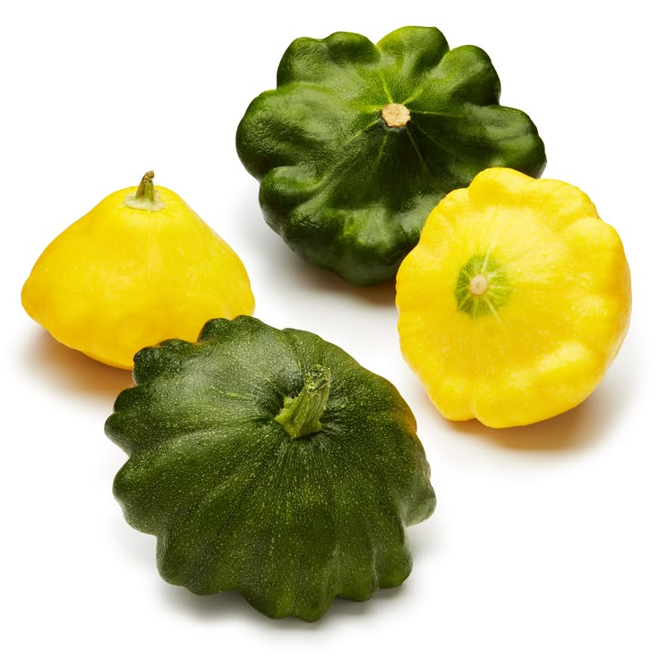
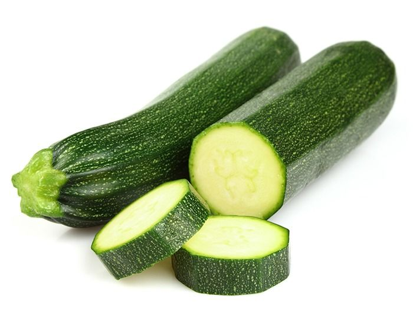
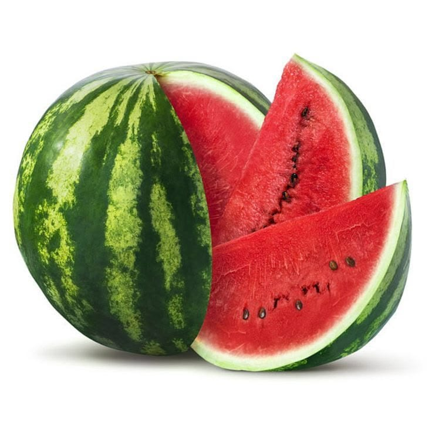
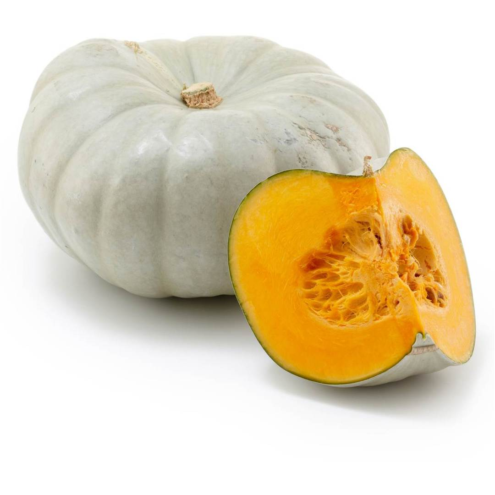
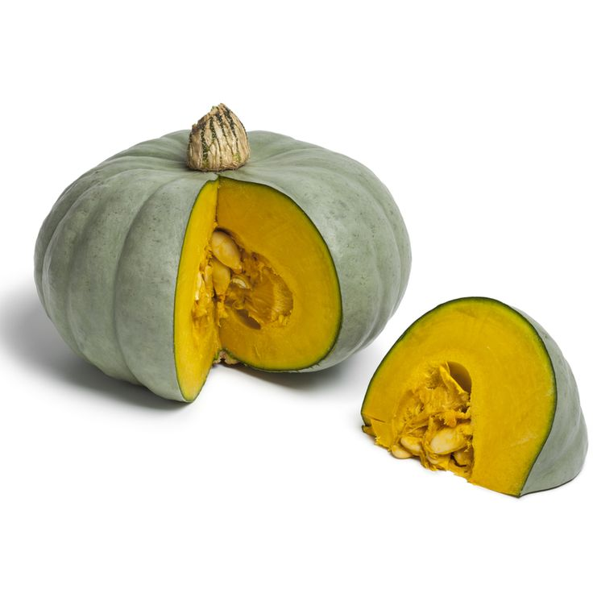
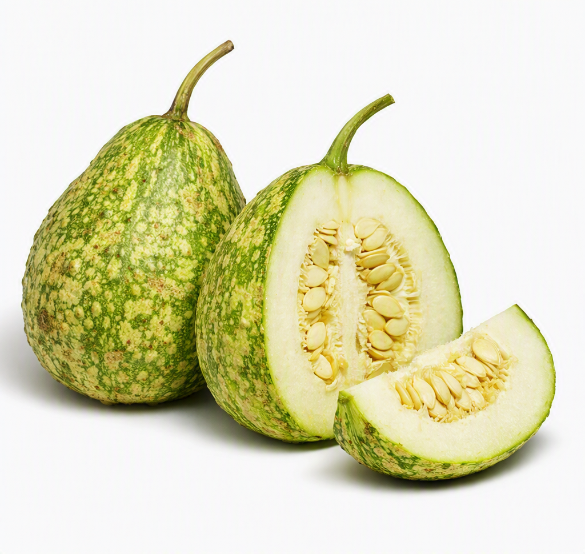

PattyPan
Patty Pan Squash is a cheerful, saucer-shaped vegetable that brings both beauty and flavor to the table. With its scalloped edges and tender flesh, it’s often called the “sunburst squash” for its bright, playful appearance. Mild and slightly nutty in taste, patty pans are delicious when roasted whole, stuffed with herbs and grains, or lightly sautéed for a crisp side dish. They’re rich in vitamin C, fiber, and antioxidants, supporting immunity and healthy digestion. In traditional markets, they stand out for their shape and versatility, often used to add color and creativity to meals. Whether served as a centerpiece or a simple side, Patty Pan Squash is a celebration of freshness and flavor.

Zucchini
Zucchini is a versatile summer squash, loved for its tender texture and mild, slightly sweet flavor. Its glossy green skin and soft flesh make it perfect for grilling, roasting, stir-fries, or baking into breads and muffins. In Zimbabwean kitchens, zucchini often finds its way into stews and mixed vegetable dishes, soaking up spices beautifully. Nutritionally, it’s low in calories but rich in vitamin C, potassium, and antioxidants, supporting heart health, immunity, and digestion. Whether sliced into ribbons for salads, stuffed with grains, or simply sautéed with garlic, zucchini adapts to countless recipes. It’s a crop that brings freshness, creativity, and nourishment to every meal.

Sweet Melon
Sweet Melon is a summertime favorite, prized for its juicy flesh and delicate aroma. With its pale green to golden skin and soft, fragrant interior, it offers a refreshing sweetness that makes it perfect for eating fresh, blending into smoothies, or serving as a cooling dessert. In local markets, sweet melon is often enjoyed as a thirst-quencher during hot days, valued for its high water content and natural sugars. Nutritionally, it’s rich in vitamin C, potassium, and antioxidants, supporting hydration, immunity, and heart health. Whether sliced into fruit salads, paired with yogurt, or simply eaten on its own, Sweet Melon brings a burst of freshness and vitality to every meal.

Watermelon
Watermelon is the ultimate summer fruit, bursting with juicy sweetness and cooling freshness. Its bright red flesh and crisp texture make it perfect for eating chilled, blending into smoothies, or serving in fruit salads. In Zimbabwean homes, watermelon is a favorite during hot afternoons, valued for its high water content that keeps the body hydrated. Nutritionally, it’s rich in vitamin C, lycopene, and antioxidants, supporting heart health, immunity, and skin vitality. Whether sliced into wedges, paired with mint, or enjoyed straight from the rind, watermelon is more than a fruit — it’s a symbol of joy, refreshment, and abundance at every gathering.
English Cucumber
English Cucumber is long, slender, and naturally refreshing, with a tender skin that doesn’t need peeling. Its mild, crisp flavor makes it perfect for salads, sandwiches, pickling, or blending into cooling drinks. Unlike regular cucumbers, English cucumbers have fewer seeds and a smoother texture, making them ideal for delicate recipes. Nutritionally, they’re hydrating and low in calories, while offering vitamin K, antioxidants, and minerals that support digestion and skin health. Whether sliced into ribbons, paired with yogurt in tzatziki, or enjoyed raw with a sprinkle of salt, English Cucumber brings lightness, freshness, and versatility to every meal.
Ashley/Ordinary Cucumber
Ashley Cucumber is a classic heirloom variety, loved for its crisp texture and refreshing flavor. With its dark green skin and uniform shape, it’s ideal for slicing into salads, sandwiches, or enjoying fresh with a sprinkle of salt. Ashley cucumbers are known for their resilience in the field, producing abundant harvests even in warm climates. Nutritionally, they’re hydrating and low in calories, while offering vitamin K, antioxidants, and minerals that support digestion and skin health. In traditional kitchens, they’re often paired with tomatoes and onions for a simple, cooling side dish. A reliable garden favorite, Ashley Cucumber delivers freshness, crunch, and nourishment in every bite.
Jam Squash
Jam Squash brings a natural sweetness that has made it a favorite in traditional kitchens. Its golden flesh cooks down into a velvety texture, perfect for hearty stews or sweet preserves. In Zimbabwean homes, it’s often simmered into comforting dishes that balance savory spices with its gentle sweetness. Beyond taste, jam squash is valued for its energy-giving starch and its role in seasonal harvest celebrations. Our farm-fresh Jam Squash is sweet, hearty, and naturally full of flavor. With its smooth flesh and rich golden color, it’s perfect for roasting, baking, soups, or making traditional jams and preserves. Jam squash is a great source of fiber, vitamin A, and essential minerals like potassium, supporting eye health, immunity, and overall wellness. Low in calories yet satisfying, it’s a versatile ingredient for both savory and sweet recipes. Its natural sweetness makes it ideal for desserts, while its creamy texture enhances stews and curries. Harvested with care, we deliver it fresh from our fields to your kitchen, ensuring maximum taste, nutrition, and quality in every bite.
Kayla Pumpkin
Kayla Pumpkin is the cook’s secret to rich soups and creamy pies. Its smooth flesh blends beautifully into purées, while roasting brings out a caramel-like sweetness. Whether paired with cinnamon for dessert or garlic and herbs for savory dishes, Kayla Pumpkin adapts effortlessly. It’s not just food — it’s a versatile ingredient that bridges traditional recipes with modern cuisine. Our farm-fresh Kayla Pumpkins are sweet, hearty, and naturally full of flavor. With their smooth golden flesh and rich taste, they’re perfect for roasting, baking, soups, or making traditional pumpkin dishes. Kayla pumpkins are a great source of fiber, vitamin A, and essential minerals like potassium, supporting eye health, immunity, and overall wellness. Low in calories yet satisfying, they’re a versatile ingredient for both savory and sweet recipes. Their natural sweetness makes them ideal for pies and desserts, while their creamy texture enhances stews and curries. Harvested with care, we deliver them fresh from our fields to your kitchen, ensuring maximum taste, nutrition, and quality in every bite.

Sampson Pumpkin
Sampson Pumpkin is known for its bold size and rich, golden flesh, making it a favorite in both traditional kitchens and modern cuisine. Its naturally sweet flavor deepens when roasted, creating a caramel-like taste that pairs beautifully with spices like cinnamon or nutmeg. In savory dishes, Samson Pumpkin adds body and creaminess to stews, curries, and soups, while in baking it transforms into velvety pies and breads. Beyond taste, it’s valued for its high beta-carotene content, supporting eye health and immunity. A true harvest hero, Samson Pumpkin brings warmth, nourishment, and versatility to the table — a crop that celebrates abundance in every season.

Nelson Pumpkin
Nelson Pumpkin is prized for its firm texture and balanced sweetness, making it a versatile choice in both traditional and modern kitchens. Its deep orange flesh holds up beautifully in slow-cooked stews and curries, while roasting brings out a natural caramel flavor that pairs well with herbs and spices. Beyond taste, Nelson Pumpkin is rich in beta-carotene and dietary fiber, supporting eye health, immunity, and digestion. In many households, it’s a symbol of abundance, often featured in harvest meals and festive gatherings. Whether turned into creamy soups, hearty side dishes, or sweet desserts, Nelson Pumpkin delivers nourishment and comfort in every serving.

BottleGourd/Mapudzi
Mapudzi (Bottlegourd) is a traditional staple vegetable, valued for its versatility and gentle flavor. With its pale green skin and tender flesh, it can be cooked into stews, curries, or enjoyed as a light side dish. In Zimbabwean kitchens, mapudzi is often simmered with tomatoes and onions, creating a comforting meal that pairs well with sadza. Beyond taste, bottlegourd is hydrating and low in calories, while offering fiber and essential minerals that support digestion and overall wellness. Its mild flavor makes it a perfect base for absorbing spices and herbs, turning simple ingredients into nourishing dishes. A true heritage crop, mapudzi connects everyday meals with cultural tradition.